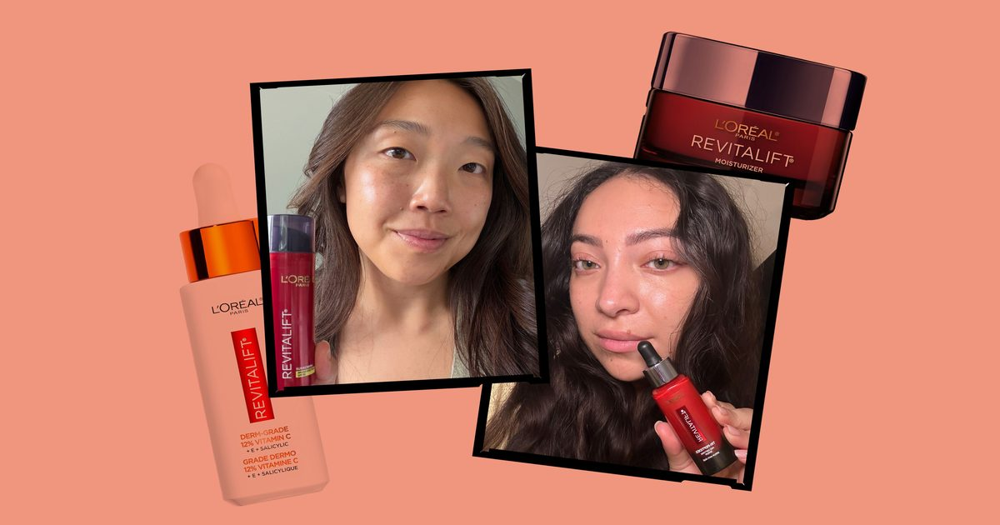

FACTUM.RU Beauty · 03.10.2026  7 лучших средств по уходу за кожей L’Oréal Paris для тонких линий, тусклости и сухости Тонкие линии, тусклость, сухость - для этого есть Revitalift. Источник: https://www.allure.com/story/best-loreal-paris-skin-care-products